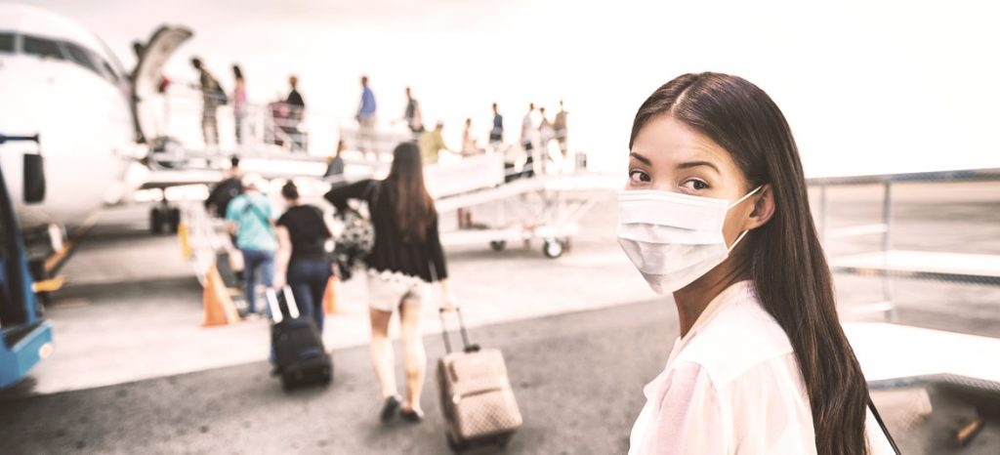

DEMOSTRADO: los suplementos de vitaminas y minerales no curan la COVID-19 . Los micronutrientes, como las vitaminas D y C o el zinc son fundamentales para el buen funcionamiento del sistema inmunológico y desempeñan un papel vital para la salud y el bienestar nutricional. En la actualidad, no hay ninguna indicación sobre el uso de suplementos de micronutrientes como tratamiento de la COVID-19. La OMS está coordinando los esfuerzos por desarrollar y evaluar medicamentos que permitan tratar la COVID-19. DEMOSTRADO: los estudios llevados a cabo demuestran que la hidroxicloroquina no produce efectos clínicos beneficiosos en el tratamiento de la COVID-19. Se han estudiado los efectos de la hidroxicloroquina o la cloroquina, un tratamiento para el paludismo, el lupus eritematoso y la artritis reumatoide, como posible tratamiento de la COVID-19. Los datos actuales indican que este fármaco no reduce el número de muertes entre los pacientes de COVID-19 hospitalizados, ni es de ayuda para las personas que padecen modalidades moderadas de la enfermedad*. El uso de la hidroxicloroquina y la cloroquina está considerado como un tratamiento por lo general seguro para pacientes con paludismo y enfermedades autoinmunes, pero puede generar efectos secundarios graves y debe evitarse cuando no esté indicado y sin supervisión médica. * Se requieren investigaciones de mayor calado para determinar su valor en pacientes con formas leves de la enfermedad o como profilaxis previa o posterior a la exposición a la COVID-19. ¿Hay que ponerse mascarilla para hacer ejercicio físico? NO es conveniente llevar mascarilla para hacer ejercicio físico, porque podría reducir la capacidad de respirar con comodidad. Además, la mascarilla se puede humedecer más rápidamente con el sudor, lo cual puede dificultar la respiración y promover el crecimiento de microorganismos. Lo importante para protegerse durante el ejercicio físico es mantenerse al menos a un metro de distancia de las demás personas. ¿Pueden los zapatos propagar el virus de la COVID-19? La probabilidad de que el virus de la COVID-19 se propague con los zapatos e infecte a personas es muy baja. Como medida de precaución, especialmente en hogares donde haya bebés y niños pequeños que gateen o jueguen en el suelo, considere dejar los zapatos a la entrada de su casa. Esto ayudará a prevenir el contacto con la suciedad o cualquier desecho que pueda ser transportado en las suelas de los zapatos.
 Consejos actualizados de la OMS para el transporte internacional en relación con el brote del nuevo coronavirus 2019-nCoV .27 de enero de 2020. A continuación se presenta una actualización de los consejos de la OMS en relación con el brote del nuevo coronavirus nCoV publicados el 10 de enero de 2020. Para obtener más información sobre el brote actual en China y los casos exportados, sírvase consultar la sección de Brotes epidémicos y los Informes de situación que publica la OMS. Hasta la fecha, los principales signos y síntomas clínicos notificados durante este brote son fiebre, disnea e infiltrados en ambos pulmones observables en radiografías de tórax. El 27 de enero de 2020 ya estaba ampliamente confirmada la transmisión entre personas en la ciudad de Wuhan, pero también en otros lugares de China y del mundo. Todavía no se dispone de suficientes conocimientos epidemiológicos sobre el 2019-nCoV como para extraer conclusiones acerca de todas las características clínicas de la enfermedad, la intensidad de la transmisión de persona a persona y la fuente original del brote. Viajeros internacionales: precauciones prácticas ordinarias. Los coronavirus son una gran familia de virus que provocan enfermedades respiratorias: desde un resfriado común hasta el síndrome respiratorio de Oriente Medio (MERS) y el síndrome respiratorio agudo severo (SRAS). Con todo, se recomienda a las personas que viajan y desarrollan síntomas respiratorios agudos, antes, durante o después del viaje, que soliciten atención médica y expliquen al profesional sanitario el trayecto que han realizado. A través de profesionales sanitarios, centros de salud para viajeros, agencias de viajes, operadores de transporte y puntos de entrada, las autoridades de salud pública deben ofrecer información a los viajeros para reducir el riesgo general de que se produzcan infecciones respiratorias agudas. Las recomendaciones estándar de la OMS publicadas en su sitio web, Nuevo coronavirus (2019-nCoV): orientaciones para el público están dirigidas al público en general a fin de reducir la exposición a diversas enfermedades, así como su transmisión, protegerse a uno mismo y a los demás, y no enfermar al realizar viajes. En el sitio web de la OMS pueden encontrarse orientaciones técnicas de la Organización Mundial de la Salud en materia de supervisión y definición de casos, prácticas de laboratorio, atención clínica de casos sospechosos de infección por el nuevo coronavirus, asistencia domiciliaria a pacientes sospechosos de infección por el nuevo coronavirus, prevención y control de infecciones, comunicaciones sobre el riesgo de infección, lotes de productos básicos para la enfermedad del nuevo coronavirus y reducción de la transmisión de animales a humanos. Medidas sanitarias relativas al transporte internacional. El brote actual se originó en la ciudad de Wuhan, que es un importante centro de transporte nacional e internacional. Debido a los movimientos de población a gran escala y a que, como se ha podido observar, el virus se transmite de persona a persona, no sería extraño que siguiesen confirmándose nuevos casos en otras zonas del país y en otros países. Con la información disponible actualmente del nuevo coronavirus, la OMS recomienda aplicar medidas para limitar el riesgo de exportación o importación de la enfermedad, sin por ello restringir innecesariamente el transporte internacional.